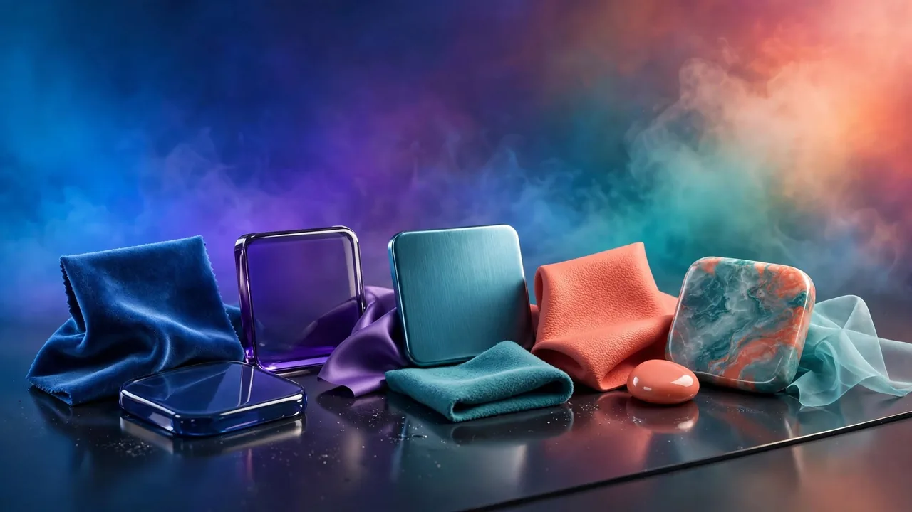

How to Build a Color Palette That Actually Works
The color-wheel relationships behind good schemes, the 60-30-10 rule, and how to build a palette that feels intentional.
By 123MiniApps · Published 2026-08-01 · Updated 2026-10-03 · 1094 words · about 5 minute read
A good color palette makes a design feel intentional and professional; a bad one makes it feel amateurish, even if everything else is well made. The difference is rarely about individual colors being "nice", it is about how the colors relate to each other. Those relationships follow understandable rules based on the color wheel, and once you know them you can build harmonious palettes deliberately. The Color Palette Generator creates coordinated schemes in your browser, and this article explains the principles behind them.
Color harmony is not mysterious taste; it is largely geometry on the color wheel. Colors in particular positional relationships tend to look good together, and naming those relationships gives you a reliable toolkit for building schemes.
The color wheel relationships
Most classic color schemes come from picking colors at specific positions on the wheel:
- Complementary: two colors opposite each other, offering strong contrast and vibrancy.
- Analogous: colors next to each other, giving a harmonious, low-contrast, comfortable feel.
- Triadic: three colors evenly spaced around the wheel, balanced and lively.
- Monochromatic: one hue in varying lightness and saturation, clean and cohesive.
- Split-complementary: a color plus the two neighbours of its complement, contrast with less tension.
Each relationship produces a different mood. Complementary schemes feel bold and energetic; analogous ones feel calm and unified; monochromatic ones feel minimal and elegant. Choosing the relationship is really choosing the feeling you want the design to have.
The 60-30-10 rule
Knowing which colors go together is half the battle; how much of each to use is the other half. A time-tested guideline is the 60-30-10 rule: roughly 60% of the design in a dominant color (often a neutral), 30% in a secondary color, and 10% in an accent for emphasis. This proportion creates visual hierarchy and stops any color from overwhelming the others. The accent, that 10%, is what draws the eye to buttons and calls to action. Applying this rule instantly makes a palette feel balanced rather than chaotic, because it gives each color a defined role and amount.
Great palettes usually rest on neutral colors, whites, greys, near-blacks, with just one or two saturated colors as accents. Trying to make every color vivid produces visual noise. Let neutrals carry most of the design and save saturation for emphasis.
Building a palette from one color
A practical way to start is with a single base color, perhaps a brand color, or one sampled from an image, and build outward using these relationships. Pick your base, choose a relationship that fits the mood you want, and derive the supporting colors from it. Then add neutrals and adjust lightness and saturation so the colors work at the proportions the 60-30-10 rule suggests. Thinking in HSL makes this systematic: keep hues in their chosen relationship while tuning saturation and lightness for balance. A generator automates the wheel geometry, giving you a coordinated set instantly that you can refine.
Testing a palette in context
A palette that looks good as a row of swatches can still fail in use, so test it in context. The most important check is contrast: text must be readable against its background, which is not just an aesthetic concern but an accessibility requirement, verified with a contrast checker. Also consider how the colors behave in the actual layout, a bold accent that looks great in a swatch can be overwhelming across a large area. Viewing the palette applied to a real design, not just as isolated colors, reveals problems that swatches hide.

Generate harmonious color schemes, complementary, analogous, triadic and more, from any starting color, entirely in your browser.
From palette to finished design
A finished palette feeds directly into the rest of your design work. The colors become gradients for backgrounds, they are checked for legibility with a contrast checker, and they are specified in code using the hex and HSL values a color picker provides. A coherent palette applied consistently is one of the strongest signals of a professional design, because it makes everything, buttons, text, backgrounds, accents, feel like part of one deliberate system.
Building a palette for light and dark modes
A modern palette increasingly has to work in both light and dark modes, and this is where a naive set of fixed colours falls apart. A vivid accent that looks perfect on a white background can glare uncomfortably on a dark one, and a dark text colour obviously cannot carry over to a dark theme at all. The professional approach is to define colours by their role, background, surface, primary text, secondary text, accent, border, and then provide a light-mode and a dark-mode value for each role, rather than hard-coding specific colours throughout the design.
This role-based thinking is exactly how well-built design systems support multiple themes without redrawing everything. The accent hue might stay broadly the same across modes but shift in lightness and saturation so it reads well against each background; text swaps from near-black in light mode to near-white in dark. Because every element references a role rather than a literal colour, switching the whole interface between light and dark becomes a matter of swapping one set of values for another. When you build a palette, it is worth planning for this from the start: choose colours that have a comfortable equivalent in the opposite mode, and check that your accent maintains sufficient contrast against both a light and a dark surface. A palette designed with both modes in mind is far more durable and versatile than one tuned for a single background, and it spares you a painful retrofit later when dark mode inevitably becomes a requirement.
In summary, a working color palette comes from relationships on the color wheel, complementary, analogous, triadic, monochromatic, chosen for the mood you want, then balanced with the 60-30-10 rule and grounded in neutrals. Build outward from a single base color, keep most of the design neutral with saturated accents for emphasis, and always test contrast and real-world application. Follow these principles and color stops being a gamble and becomes a deliberate, repeatable part of designing something that looks intentional and professional.